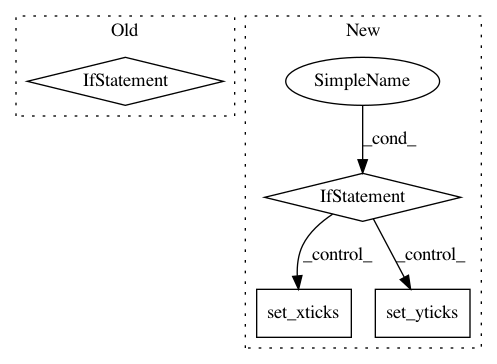

6d895c6a1f32c982ca3d75929bd0f303a16746d5,pynets/plotting.py,,plot_conn_mat,#Any#Any#Any#,12
Before Change
plt.imshow(conn_matrix, interpolation="nearest", vmax=float(1.0), vmin=float(-1.0), cmap=plt.cm.RdBu_r)
// And display the labels
if rois_num < 100:
if all(isinstance(item, int) for item in label_names) is False:
plt.xticks(range(len(label_names)), label_names, size="xx-small", rotation=90)
plt.yticks(range(len(label_names)), label_names, size="xx-small")
else:
plt.xticks(range(rois_num), rotation=90)
plt.yticks(range(rois_num))
plt.grid(False)
plt.tight_layout()
plt.savefig(out_path_fig, dpi=dpi_resolution)
plt.close()
After Change
conn_matrix = np.array(np.array(thresholding.autofix(conn_matrix)))
[z_min, z_max] = -np.abs(conn_matrix).max(), np.abs(conn_matrix).max()
rois_num = conn_matrix.shape[0]
if rois_num < 100:
plt.gca().set_xticks(size="xx-small")
plt.gca().set_yticks(size="xx-small")
plot_matrix(conn_matrix, figure=(10, 10), label_names=label_names, vmax=z_max*0.8, vmin=z_min*0.8, reorder=True,
auto_fit=True, grid=False, colorbar=False)
else:
plot_matrix(conn_matrix, figure=(10, 10), vmax=z_max*0.8, vmin=z_min*0.8, auto_fit=True, grid=False,
colorbar=False)
plt.savefig(out_path_fig, dpi=dpi_resolution)
plt.close()
return
In pattern: SUPERPATTERN
Frequency: 3
Non-data size: 4
Instances
Project Name: dPys/PyNets
Commit Name: 6d895c6a1f32c982ca3d75929bd0f303a16746d5
Time: 2018-08-28
Author: dpisner@utexas.edu
File Name: pynets/plotting.py
Class Name:
Method Name: plot_conn_mat
Project Name: BindsNET/bindsnet
Commit Name: a802d31210ed262b8159b656b256bdacf10c9d61
Time: 2020-05-11
Author: hananel@hazan.org.il
File Name: bindsnet/analysis/plotting.py
Class Name:
Method Name: plot_performance
Project Name: robertmartin8/PyPortfolioOpt
Commit Name: 1d07a55ab2ddd028ac0e607db496f74bb875ed65
Time: 2020-03-18
Author: martin.robertandrew@gmail.com
File Name: pypfopt/risk_models.py
Class Name:
Method Name: correlation_plot